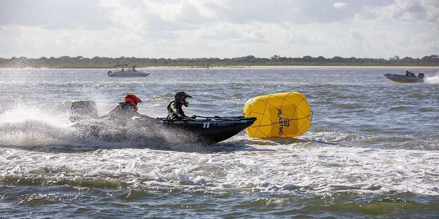
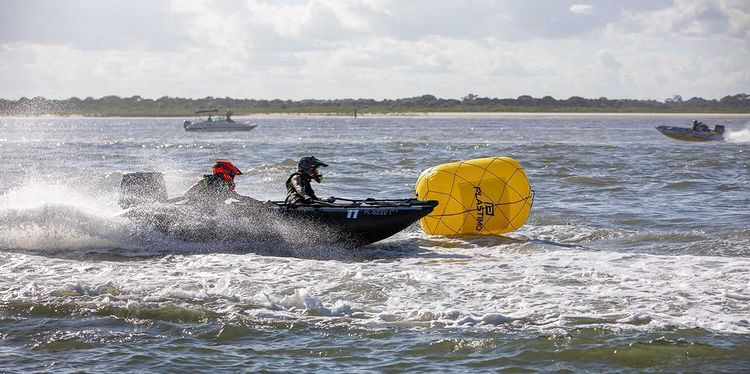
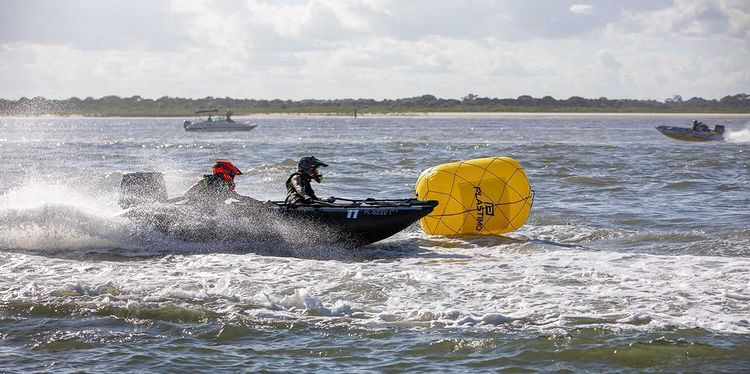

Race Photo Gallery
From GoPro video footage
 From New Smyrna Beach thundercat rally
From New Smyrna Beach thundercat rally
 
photo credit to ibr.us

photo credit to ibr.us
Thundercats are small, nimble race boats capable of wave jumping, fast cornering, and running at over 50 miles per hour.
They have fiberglass hulls and inflatable side pontoons, and a 50 horsepower Tohatsu outboard engine mounted on the back.
Pilots can singlehandedly drive the boat, but for competitive racing, a co-pilot is vital to race the course quicker than all of the other boats.
I started driving thundercats in 2019 and was drawn to the adrenaline-pumping intensity of thundercat racing. I became part of This Side Up Racing, which will be the first team from the US to enter the Thundercat World Championships, and with the youngest competitors (my brother and I). Until then, we are training here in Florida, and have posted content to YouTube and Instagram showing our progress. (I've got the orange helmet)
From New Smyrna Beach thundercat rally

photo credit to ibr.us